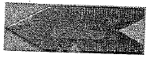
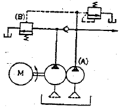
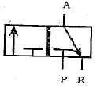
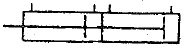

설비보전기능사 (2014-04-06 기출문제)
1과목: 기계보전 일반(대략구분)
1. 제동장치에서 작동부분의 구조에 따라 분류하였을 때 해당되지 않는 것은?
- 밴드 브레이크
- 전자 브레이크
- 블록 브레이크
- 디스크 브레이크
(정답률: 71%)

2. 나사의 도시방법 중 틀린 것은?
- 수나사와 암나사의 골지름은 가는 실선으로 그린다.
- 보이지 않는 나사부는 중간 굵기의 파선으로 그린다.
- 나사의 결합된 부분의 도시는 주로 수나사를 나타낸다.
- 불완전 나사부는 축선에 대하여 45˚로 가는 실선으로 그린다.
(정답률: 63%)
3. 배관계통의 정비를 위하여 분해할 필요가 있는 곳에 사용하는 관 이음쇠로 적당한 것은?
- 엘보
- 유니언
- 소켓
- 밴드
(정답률: 80%)
4. 펌프에서 진동이 발생할 때 그 원인으로 거리가 먼 것은?
- 축의 중심이 불일치
- 축봉에 대한 불충분한 냉각수 공급
- 견고하지 않은 기초
- 임펠러(회전차)의 손상
(정답률: 81%)
5. 정 투상도에 대한 설명으로 올바르지 않은 것은?
- 어떤 물체의 형상도 정확하게 표현할 수 있다.
- 물체를 보는 방향에 따라 3종류로 분류하며 이것을 기준투상도라 한다.
- 물체전체를 완전히 표현하려면 두 개 이상의 투상도가 필요할 때가 있다.
- 정면도는 물체의 앞에서 바라본 모양을 나타낸 도면이다.
(정답률: 74%)
6. 무거운 물체를 달아 올리기 위하여 훅(hook)을 걸 수 있는 고리가 있는 볼트는?
- 아이 볼트
- 나비 볼트
- 리머 볼트
- 간격유지 볼트
(정답률: 76%)
7. 합성고무와 합성수지 및 금속 클로이드 등을 주성분으로 제조된 것으로, 어떤 상태의 접합부위에도 쉽게 바를 수 있고 누설을 방지하기 위해 사용하는 것은?
- 액상가스킷
- 록타이트
- 와세린방청유
- 감압형접착제
(정답률: 64%)
8. 액체윤활제에 비해 그리스 윤활제의 장점이라 할 수 있는 것은?
- 밀봉성이 좋다.
- 냉각효과가 크다.
- 순환급유가 쉽다.
- 이물질의 연속제거가 가능하다.
(정답률: 56%)
9. 미끄럼 베어링과 구름 베어링을 비교했을 때 구름 베어링에 대한 설명으로 옳지 않은 것은?
- 설치가 간편하다.
- 기동 토크가 작다.
- 표준형 양산품으로 호환성이 좋다.
- 감쇠력이 우수하고 충격 흡수력이 크다.
(정답률: 60%)
10. 다음 그림과 같은 센터 게이지의 용도는?

- 나사의 길이 측정
- 나사의 강도 측정
- 나사산의 피치 측정
- 나사 절삭바이트의 각도 측정
(정답률: 68%)
11. 윤활제의 급유에서 사이퍼(syphon) 급유 방법은 어느 방식인가?
- 손 급유법
- 적하 급유법
- 패드 급유법
- 가시부상 유적 급유법
(정답률: 73%)
12. 모세관 현상에 의해 마찰면에 급유하는 방법으로 맞는 것은?
- 패드 급유법(pad oiling)
- 버킷 급유법(bucket oiling)
- 비말 급유법(splash oiling)
- 유륜식 급유법(ring oiling)
(정답률: 75%)
13. 베어링 윤활의 목적이 아닌 것은?
- 금속류의 직접 접촉에 의한 소음을 방지
- 마모를 막고 베어링 수명을 연장
- 동력손실이 늘어나고 마찰에 의한 온도상승 효과
- 먼지 또는 이물질의 침입을 방지
(정답률: 85%)
14. 한국산업규격(KS) 중에서 “KS B"로 분류되는 부문은?
- 기계
- 섬유
- 전기
- 수송기계
(정답률: 84%)
15. 압축기 밸브부품 중 밸브스프링의 교환에 대한 내용으로 잘못된 것은?
- 자유 상태에서 높이가 규정치 이하로 되었을 때 교환한다.
- 손으로 간단히 수정하여 사용해서는 안 된다.
- 교환시간이 되면 기준치 내에서도 교환한다.
- 교환시간이 되어도 탄성마모가 없으면 교환하지 않는다.
(정답률: 88%)
16. 송풍기의 풍량이 부족한 경우의 원인이 아닌 것은?
- 회전수가 저하되었을 때
- V-벨트의 장력이 적당할 때
- 임펠러에 이물질이 끼었을 때
- 송풍기 또는 덕트에 먼지 등이 쌓여 있어 저항이 증대되었을 때
(정답률: 86%)
17. 기계부품의 단면 표시법 중 옳지 않은 것은?
- 단면부에 일정간격으로 경사선을 그은 것을 해칭(hatching)이라 한다.
- 단면 표시로 색칠한 것을 스머징(smudging)이라 한다.
- 단면 표시는 치수, 문자, 및 기호보다 우선하므로 중단하지 않고 해칭이나 스머징을 한다.
- 가스킷(gasket)이나 철판 등 극히 얇은 제품의 단면은 투상선을 1개의 굵은 실선으로 표시한다.
(정답률: 74%)
18. 유압 기술을 산업분야에 적용할 때 가장 큰 장점은?
- 소형장치로 큰 출력을 낼 수 있다.
- 폭발과 인화의 위험이 없다.
- 동력전달이 간단하며 먼거리 이송이 쉽다.
- 과부하에 대하여 안전하다.
(정답률: 70%)
19. 축의 센터링(Centering) 불량 시 발생하는 현상이 아닌 것은?
- 진동이 크다.
- 축의 손상(절손우려)이 크다.
- 베어링부의 마모가 심하다.
- 기계성능이 향상된다.
(정답률: 85%)
20. 체인(chain) 전동 장치 중 오프셋 링크에서 링크판과 부시를 일체화시킨 것으로 오프셋 링크와 이음 핀으로 연결되어 있으며, 저속 중용량의 컨베이어, 엘리베이터에 사용하는 체인은?
- 롤러 체인(roller chain)
- 부시 체인(bush chain)
- 핀틀 체인(pintle chain)
- 사일런트 체인(silent chain)
(정답률: 50%)
2과목: 설비관리(대략구분)
21. 다음 중 비용적형 펌프가 아닌 것은?
- 벌류트 펌프
- 터빈 펌프
- 기어 펌프
- 축류 펌프
(정답률: 65%)
22. 전동기가 기동이 안 될 때 그 원인으로 옳지 않은 것은?
- 단선
- 전원 전압의 변동
- 전기 기기류의 고장
- 운전조작 잘못
(정답률: 53%)
23. 와셔(washer)의 용도가 아닌 것은?
- 볼트 구멍이 볼트 지름보다 너무 클 때
- 볼트와 너트의 자리면이 고르지 못할 때
- 볼트 자리면 재료의 강도가 강할 때
- 너트의 풀림을 방지하고자 할 때
(정답률: 57%)
24. 설비의 고장률 곡선(욕조 곡선)을 기준으로 설비의 고장상태를 3단계로 구분하였을 경우, 해당되지 않는 것은?
- 초기 고장기
- 우발 고장기
- 마모 고장기
- 말기 고장기
(정답률: 72%)
25. 설비표준에서 일상보전의 조건, 방법에 대한 표준으로 급유표준, 청소표준, 조정표준 등이 작성되는 표준은?
- 정비표준
- 수리표준
- 검사표준
- 작업표준
(정답률: 58%)
26. 설비의 보전효과 측정방법에서 각 항목별 산출식이 옳지 않은 것은?
- 평균수리시간 = 총운전시간/정지횟수
- 설비가동률 = (가동시간/부하시간)×100
- 고장 도수율 = (고장건수/부하시간)×100
- 고장 강도율 = (고장정지시간/부하시간)×100
(정답률: 52%)
27. 계장방법 중 화학, 제철공업 등 공정이 일반적으로 정지하고 있고 원료나 동력이 이동하면서 반응이나 변화가 이루어지는 공정에 사용되는 계장은?
- 시험 연구용 계장
- 현장 작업용 계장
- 관리 작업용 계장
- 장치 공업용 계장
(정답률: 45%)
28. 계측관리 추진방법에서 계측관리를 추진하는데 중요한 점이 아닌 것은?
- 필요로 하는 충분한 경제적, 인적 기업노력을 투입하여 유효하게 기능을 발휘하도록 할 것
- 기업목적으로 명확히 확립할 것
- 계측관리, 정보관리, 자료관리를 유기적으로 결합하지 말고 독립적으로 관리할 것
- 정보검출부에서 계측기를 정비하고 계측관리의 체계를 확립할 것
(정답률: 73%)
29. 돌발적 또는 만성적으로 발생하는 고장에 의해 발생되는 로스를 무슨 로스라 하는가?
- 속도 저하 로스
- 고장 로스
- 순간정지 로스
- 수율 저하 로스
(정답률: 84%)
30. 전통적인 관리시스템과 비교한 종합적 생산보전(TPM)의 특징으로 틀린 것은?
- 원인추구를 통한 원인제거 활동이다.
- 전사적 조직이 아닌 기능적 조직에 의하여 참여한다.
- Top down 목표설정과 Bottom up 활동이다.
- 현장에서의 사실에 입각한 관리시스템이다.
(정답률: 46%)
3과목: 공유압 일반(대략구분)
31. 설비나 시스템의 고장이 발생되기 전 미리 보전하여, 특정 운전상태를 계속 유지하는 보전방법은?
- 사후보전
- 예방보전
- 고장보전
- 열화보전
(정답률: 84%)
32. 설비고장의 종류 중 시스템의 설계와 제조공정과의 불일치에 의한 고장은?
- 오용고장
- 마모고장
- 노화고장
- 제조고장
(정답률: 72%)
33. 연료구입 시 고려해야 할 사항으로 가장 거리가 먼 것은?
- 연료의 저장성
- 연료 구입자의 특성
- 연료의 운반성
- 연료의 폭발, 화재, 중독성
(정답률: 84%)
34. 설비보전 효과에 속하지 않는 것은?
- 제조원가 절감
- 불량품 감소
- 가동률 향상
- 납기지연 발생
(정답률: 79%)
35. 재료의 소성 또는 유동성의 성질을 이용하여 재료를 가공 성형하여 제품을 얻는 치공구는?
- 공구
- 검사구
- 금형
- 치구부착구
(정답률: 59%)
36. 설비관리의 목적은 설비의 기능을 가장 효과적으로 활용하기 위함이라고 말할 수 있다. 설비관리의 기능 중 설비가 생긴 후부터의 관리단계로 옳은 것은?
- 설비투자 관리단계
- 사업 관리단계
- 생산보전 관리단계
- 건설 관리단계
(정답률: 67%)
37. 설비의 분류방법 중 뜻이 없는 기호법과 같이 종류, 크기, 형태 등에 관계없이 배치순, 구입순으로 기호를 표기하는 방식은?
- 세구분식 기호법
- 십진 분류 기호법
- 순번식 기호법
- 기억식 기호법
(정답률: 82%)
38. 정비계획을 수립할 때 전제가 되는 조건으로 가장 거리가 먼 것은?
- 생산요원
- 생산계획
- 수리능력
- 수리형태
(정답률: 59%)
39. 다음 중 일시정체 대책이 아닌 것은?
- 현상을 잘 볼 것
- 요인계통을 재검토할 것
- 미세한 결함을 시정할 것
- 최적조건을 파악할 것
(정답률: 42%)
40. 밸브의 개폐 정도 또는 교축 정도 등을 변화시키기 위하여 스풀의 이동량을 규제하는 조정기구는?
- 드레인 제한기구
- 가변 내부 제한기구
- 가변 기호 제한기구
- 가변 행정 제한기구
(정답률: 56%)
41. 유압작동유에 관한 특성 중 일반적으로 가장 중요한 것은?
- 점도
- 효율
- 온도
- 산화안정성
(정답률: 63%)
42. 유압장치에서 작동유의 압력이 국부적으로 낮아지면 용해공기가 기포로 된다. 이 기포가 급격한 압력상승에 의해 초고압으로 되어 액체 통로의 표면을 때려 소음과 진동이 발생하는 현상은?
- 수막현상
- 노킹현상
- 채터링현상
- 캐비테이션
(정답률: 65%)
43. 회전체의 회전에 의해 기체에 주어진 원심력을 이용하여 기체를 압송하는 기계는?
- 축류 송풍기
- 왕복 압축기
- 원심 송풍기
- 회전식 압축기
(정답률: 66%)
44. 도면에서 (B)로 표시한 밸브의 이름은 무엇인가?

- 시퀀스 밸브
- 릴리이프 밸브
- 언로드 밸브
- 유량조절 밸브
(정답률: 46%)
45. ISO 규격에 의한 공유압 밸브 연결구 표시방법으로 옳은 것은?
- 공급라인 : 1
- 배기라인 : 2, 4, 6
- 작업라인 : 3, 5, 7
- 제어라인 : 11, 13, 15
(정답률: 56%)
46. 그림과 같은 방향제어밸브의 명칭은?

- 2포트 2위치 밸브
- 3포트 2위치 밸브
- 4포트 2위치 밸브
- 5포트 2위치 밸브
(정답률: 74%)
47. 다음 기호의 공압실린더에 관한 설명으로 옳은 것은?

- 전・후진시 추력이 같다
- 쿠션장치가 내장되어 있다.
- 긴 행정거리가 요구되는 경우에 주로 사용된다.
- 같은 크기의 실린더에 비해 추력이 약 2배 크다.
(정답률: 52%)
48. 다음 중 축압기의 기능과 거리가 먼 것은?
- 쿠션 작용
- 충격의 증대
- 부하 관로의 기름 누설의 보상
- 온도 변화에 따른 기름의 용적 변화의 보상
(정답률: 59%)
49. 약 300˚ 이내의 일정한 각도 범위에서 각운동을 하는 것은?
- 각도형 액추에이터
- 복동형 액추에이터
- 차동형 액추에이터
- 요동형 액추에이터
(정답률: 44%)
50. 공압 시스템을 설계할 때 각종 기기의 선정방법에 관한 사항으로 옳은 것은?
- 공압필터는 통과 공기량보다 작은 것을 선정한다.
- 윤활기는 공기량에 대해 압력강하가 가능한 작은 쪽이 좋다.
- 솔레노이드 밸브의 유량은 실린더의 필요 공기량과 같아야 한다.
- 압력조정밸브는 1차 압력의 부하 변동에 따른 유량 변화에 대하여 2차 압력의 변화가 커야 한다.
(정답률: 39%)
4과목: 산업안전(대략구분)
51. 변동하는 공기 수요에 공급량을 맞추기 위한 압축기의 조절 방식 중 가장 간단한 방식으로 압력 안전밸브에 의하여 압축기의 압력을 제어하며 무부하 조절 방식에 속하는 것은?
- 차단 조절
- 흡입량 조절
- 배기 조절
- 그립-암 조절
(정답률: 47%)
52. 유압회로에서 분기회로의 압력을 주회로의 압력보다 낮게 제어하고 싶을 때 사용하는 밸브는?
- 감압 밸브
- 시퀀스 밸브
- 릴리프 밸브
- 카운터밸런스 밸브
(정답률: 68%)
53. 유압에서 사용하는 제어위치에 관한 설명으로 옳지 않은 것은?
- 정상위치 : 밸브에 신호가 공급되었을 때의 제어위치, 이는 시동조건에 의하여 결정된다.
- 구성요소의 중립위치 : 구성요소에서 외력이 제거된 상태에서 스스로 갖게 되는 제어위치
- 초기위치 : 구성요소가 작업을 시작할 때에 요구되는 제어 위치, 이는 시동조건에 의하여 결정된다.
- 시스템의 중립위치 : 시스템에 파워가 공급되지 않은 상태이고, 각각의 구성요소는 제작자에 의하여 놓여지거나, 내장된 스프링 등과 같이 외력에 의하지 않고 자체적으로 갖게 되는 제어위치에 있는 상태이다.
(정답률: 39%)
54. 일반적으로 스패너작업 시 가장 좋은 방법은?
- 몸 쪽으로 당겨서 사용한다.
- 몸 반대쪽으로 밀어서 사용한다.
- 필요에 따라 임의로 양쪽 모두 사용한다.
- 두 개로 잇거나 자루에 파이프를 이어서 사용한다.
(정답률: 66%)
55. 물속에서 발열 또는 발화하지 않는 것은?
- 칼륨
- 나트륨
- 요오드산 염류
- 금속의 수소화물
(정답률: 57%)
56. 대통령령으로 정하는 유해・위험설비를 보유한 사업장의 사업주는 공정안전보고서를 작성하여 제출하도록 되어있다. 이때 공정안전보고서에 포함되는 내용이 아닌 것은?
- 공정안전자료
- 공정위험성 평가서
- 안전운전계획
- 생산공정계획
(정답률: 62%)
57. 보건표지의 색채에서 바탕은 노란색이고, 기본모형, 관련부호 및 그림은 검은색으로 되어 있는 표지판은 무슨 표지인가?
- 금지 표지
- 경고 표지
- 지시 표지
- 안내 표지
(정답률: 68%)
58. 가설 구조물이 갖추어야 할 3가지 조건이 아닌 것은?
- 경제성
- 안정성
- 외관성
- 사용성
(정답률: 76%)
59. 작업에 관련된 취약점이나 그 취약점에 대응하는 작업방법에 대한 전문지식을 부여하기 위한 안전교육은?
- 태도교육
- 지식교육
- 심리교육
- 기능교육
(정답률: 59%)
60. 연삭기의 위험 요인으로 잘못 설명한 것은?
- 숫돌이 파괴되어 작업자의 신체 부위와 충돌한다.
- 가공 재료에서 비산하는 입자가 작업자의 눈에 들어갈 위험이 있다.
- 회전하는 숫돌과 같은 방향으로 작업자의 손이 말려들기 쉽다.
- 숫돌에 작업자의 신체 부위가 접촉될 위험성은 없다.
(정답률: 82%)